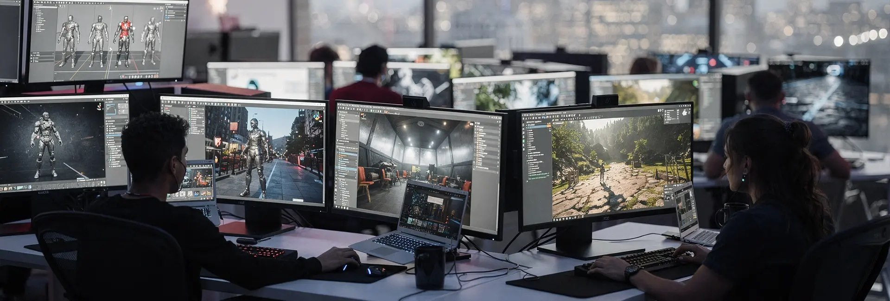

Application development
Clear interfaces and dependable app foundations.

Creative technology · Interactive systems · Applied AI
App & Game Developer AI Engineer
I turn ideas into useful apps, playful worlds, and thoughtful AI tools.
Building across applications, games, and intelligent systems.
I enjoy taking a concept from a rough sketch to a working experience. My interests sit at the intersection of app development, game systems, and applied AI, where good engineering can make ambitious ideas feel clear and enjoyable to use.
I like small, iterative builds: make the core loop work, learn from each prototype, and refine the details that make an experience feel complete. Outside the code, I follow game design, digital art, and the ways people interact with new technology.
A practical toolkit for shaping ideas into reliable, interactive software.
Clear interfaces and dependable app foundations.
Interactive mechanics, game loops, and playable prototypes.
Useful model integrations grounded in real tasks.
A developing foundation shaped by study and hands-on project work.
Vilnius Tech · In progress
Developing a foundation in programming, algorithms, software design, and collaborative project work.
Exploring how game systems, accessible applications, and AI features can make digital experiences more engaging and useful.
Personal and coursework prototypes
Growing toward cross-disciplinary roles that combine product thinking, interactive development, and practical machine learning.
Concept projects that bring together code, interaction, and creative problem-solving.
Game prototype
A compact third-person adventure prototype focused on readable combat, exploration, and a world that rewards curiosity.
Productivity app
A lightweight study and project planner that turns a long task list into small, clear next steps.
AI learning tool
A document companion concept that retrieves relevant notes before generating concise, source-aware answers.